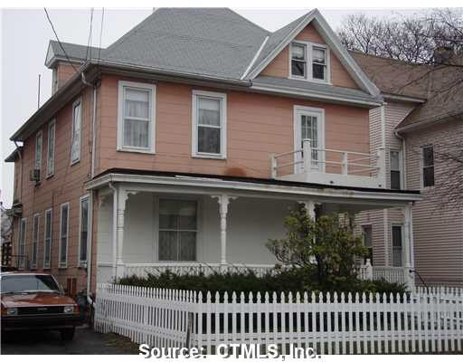

Before I could remember anything, my family all together has moved a couple of times throughout my early years, until finally we settled in this house, which is where most of my childhood takes place. In this house lived my grandparents, mother, aunt, sometimes uncle, my cousin(s), and later on my brothers and their father. Though definitely crowded and ABSOLUTELY loud, this house I grew up in was full of family and love, through and through.
I am a student at Amistad High School in New Haven, which means everyday I wake up early morning, spend all day in classes to get my grades up, and put in effort every day. It's hard, and sometimes seemingly pointless, but it's something that everyone's gotta go through, so I don't get too upset about it.